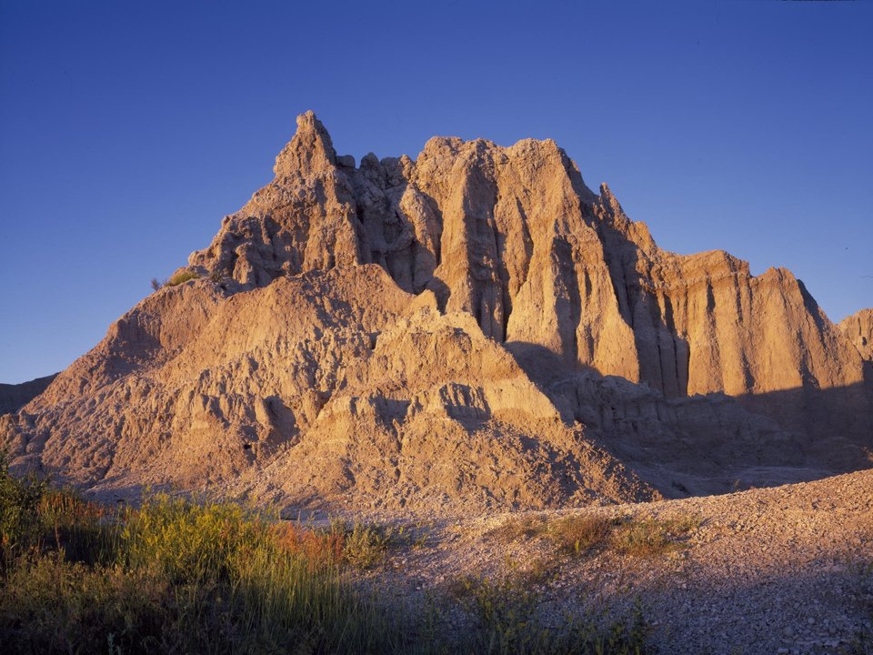

In the park · Cabins
Cedar Pass Lodge
Eco-friendly cabins inside Badlands National Park.
Official details for Cedar Pass LodgePainted pinnacles, prairie and starry skies.
Badlands National Park is a surreal landscape of striped spires and grassland full of bison and bighorn sheep. Stay in a cabin at Cedar Pass Lodge, drive the Badlands Loop at sunrise and sunset, join a night-sky program, tour the Minuteman Missile site and stop at Wall Drug for a donut.

Time illustration: direct distance at 150 KTAS plus 15 minutes for departure and arrival, matching the discovery page. Use ForeFlight for your actual flight plan.
KRAP, Rapid City Regional, is a towered airport about an hour west of the park’s entrance. Wall Municipal (6V4) is closer but has no listed services.
Rapid City Regional Airport, Rapid City, SD
Confirm FBO hours, fees and rental cars. No live fuel price is shown.
High plains weather: strong winds, summer thunderstorms and fast-moving winter systems. Check density altitude in summer. About 1280 nm from Myrtle Beach: a long cross-country day with two fuel stops. Plan four or more nights, or break the trip with an overnight on the way.
Rates and availability need travel dates. Park cabins book early.
Eco-friendly cabins inside Badlands National Park.
Official details for Cedar Pass LodgeLog cabins in Wall.
Official details for Badlands Frontier CabinsCombine with the Black Hills.
Official details for Hotel Alex JohnsonReserve weekend dinners.
Indian tacos and bison burgers.
Official details for Cedar Pass Lodge restaurantDonuts, free ice water and nostalgia.
Official details for Wall DrugA steakhouse in Rapid City.
Official details for Delmonico GrillGo early and late for the best light.
This prototype links to the local visitor site. It does not yet match events to your travel dates.
Ranger-led astronomy.
Park for Night-sky programsMild temperatures.
Hot afternoons; hike early.
Check the local calendar when choosing a weekend, and confirm dates and tickets with the organizer.
A sample long weekend: sunrise, stars and the prairie. This is a long flight; plan four or more nights. No bookings or availability confirmed.
A day trip isn't practical from the Southeast; this is a long-flight destination.
Drive to the park; sunset on the Loop Road.
Sunrise hike on the Door Trail.
Land at KRAP, subject to weather, your fuel stops and your actual flight plan.
Drive to the park; sunset on the Loop Road.
Dinner at Cedar Pass, then stargazing.
Sunrise hike on the Door Trail.
The Minuteman Missile site.
Dinner at the lodge.
Wall Drug, then on to the Black Hills.
Allow time at the airport.
A long trip east; start early and plan your fuel stops.
Sunrise hike on the Door Trail.
The Minuteman Missile site.
Dinner at the lodge.
These details make the difference between an appealing list and a usable getaway.
Lodging first.
About 1,280 nm. Plan two fuel stops and four or more nights.
Pair with the Black Hills.
May to October.
Picks and links reviewed by WingAway Weekends. Hours, prices, menus and availability change often, so confirm directly with each place before booking. Spotted something out of date, or have a favorite we missed? Email us at hello@wingawayweekends.com.
WingAway Weekends helps you discover the destination. Use ForeFlight and current official aviation information for route, performance, weather, NOTAMs and preflight decisions. Flight planning and PIC responsibility stay with the pilot.